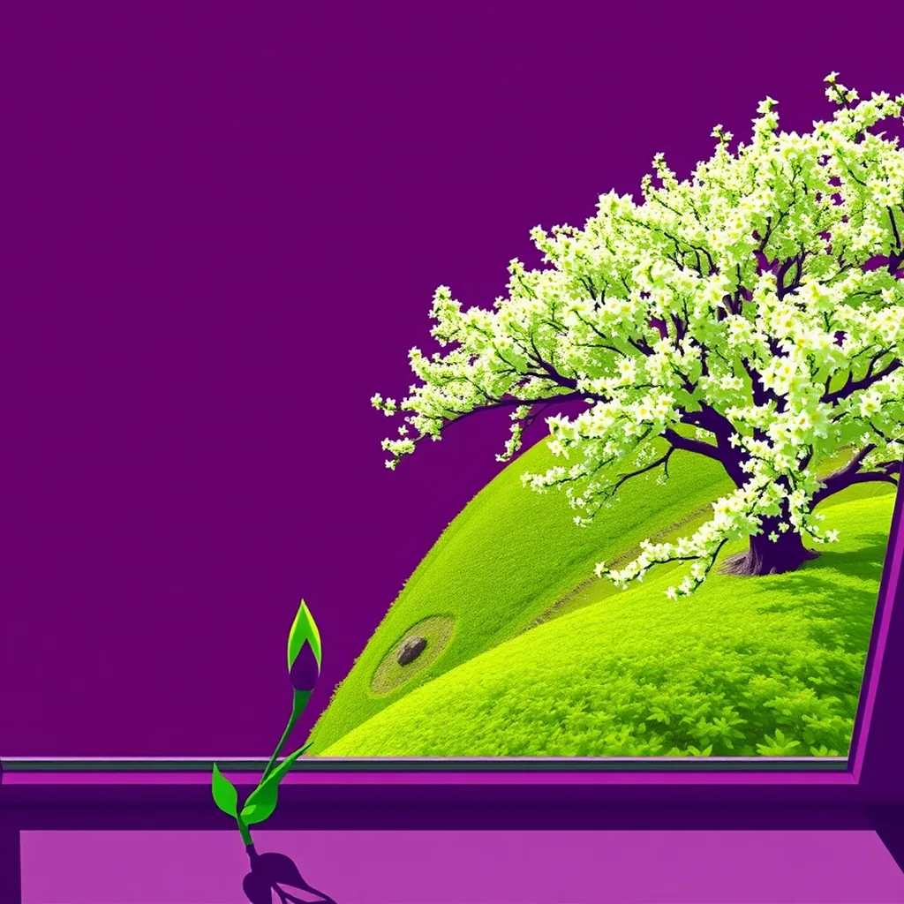

First Light ·
a bud on a windowsill cutting opening, one vast tree opening into full blossom across a hillside
Morning light cuts through rain-washed air. A tight green seam splits on the sill. The bud pushes, forcing paper-thin skin aside. Sunlight spills into the small room's mouth. Across the valley, a single stem uncoils. Then the hillside breathes wide: thousands of white arms stretch up. Shadows flatten under the sudden white explosion. Back to the windowsill, the flower holds its place but feels lighter now. A petal on the bench trembles though no wind touches it here. The wood grain beneath my palm seems to have shifted tone. My thumb finds the sharp edge of a new tool blade. It slips between metal teeth to file a chip off steel.
How this piece was made
- 01Poem written byQwen3.5 9B recorded
Local model on one RTX 3070 Ti. It also critiques its own drafts and rewrites up to five times.
- 02Image prompt written byQwen3 8B from pipeline history
Local model. It reads the poem and writes the picture brief.
- 03Image rendered byFLUX.1 [schnell] from pipeline history
Local diffusion model on the same GPU. Several candidates per poem.
- 04Image chosen byClaude Fable 5.1 from pipeline history
Claude, running as the corporation's blind art-critic. It scores every candidate and never writes a prompt.
- Poem drafts
- 5 of 5
- Poem self-score
- 6/10
- Image candidates
- 4
- Judge’s score
- 2/10
- Selection
- Highest-scoring on-subject candidate (did not clear the judge’s bar outright)
The image brief the local model wrote
A bold flat-colour screen-print poster, saturated and high-contrast, made of broad flat shapes with hard clean edges, every shape one solid colour cut like paper, with no shading, no gradient and no glow inside any shape, no photographic detail, no soft focus, no blur. Two colours own the whole image: a field of bright plum purple, and fresh spring green for every growing, rising thing and nothing else. Seen from high above: the event itself, HUGE, fills more than half of the image and runs out of the frame, caught in the middle of happening and thrown across the picture on a diagonal, with streaks, spray, sparks or beams. The whole image is one continuous scene from edge to edge. Behind the main form one wide flat area of unbroken plum rests the eye. Small things are crisp silhouettes. The subject: A vast tree of fresh spring green blossoms opens diagonally across the frame, its thousands of flat white arms stretching upward from a plum-purple hillside. A tight green seam splits the windowsill, a bud pushing paper-thin skin aside, its glow sharp against the plum field. Bright morning light cuts from the upper left, spilling over the blossoms and illuminating the sill. The tree’s event fills the frame, its motion sweeping upward, while plum shadows flatten beneath the green surge.